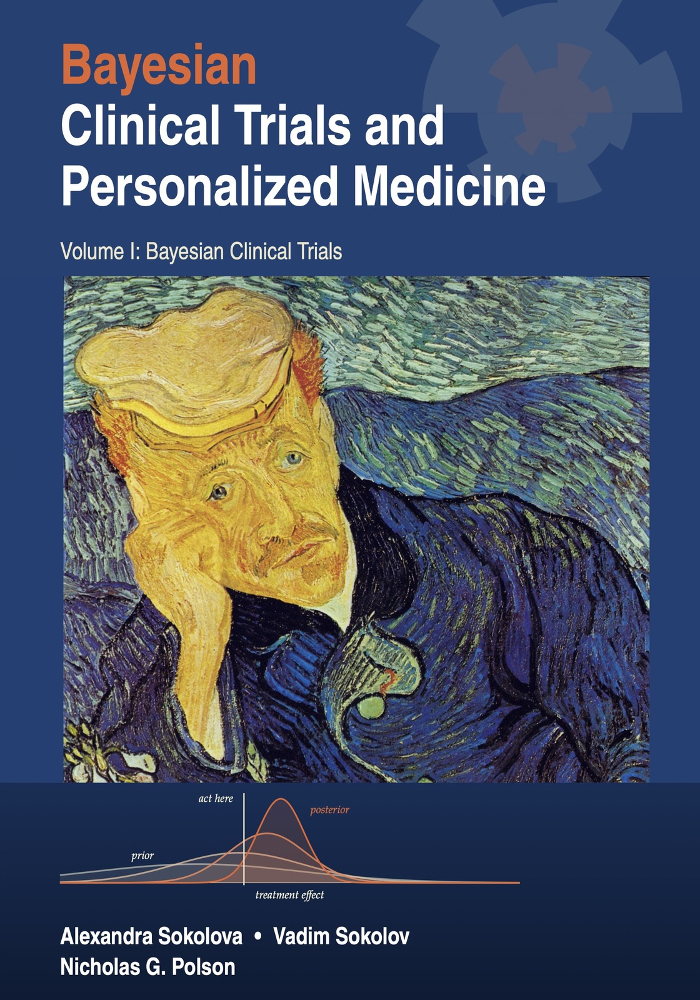

Bayesian Clinical Trials and Personalized Medicine Volume I: Bayesian Clinical Trials
By Alexandra Sokolova, Vadim Sokolov and Nicholas G. Polson.


Description
This book is for the people who run clinical trials: investigators, physicians, biostatisticians at sponsors and contract research organizations, data monitoring committee members, and regulatory reviewers. It assumes an introductory statistics course and nothing more.
The book starts from the traditional trial, with a fixed sample size, equal randomization, alpha spending for interim looks, and a p value and confidence interval in the study report. It then shows the Bayesian version of the same decision on the same numbers, and says plainly where the traditional design is the better choice. Regulation is the spine: each chapter names the statute, regulation or guidance that governs its topic, with its status and date.
Our main claim is that a Bayesian adaptive design reaches the regulatory standard of evidence sooner without lowering the bar. Against a single unadjusted look the Bayesian bar is never lower without an informative prior. The saving comes from monitoring, from the handling of multiple arms, and from prior information, and we price each one with calibrated rules and simulated operating characteristics.
We test this on real trials. In our reconstruction of the semaglutide trial SELECT, simulated at a true hazard ratio of 0.80, a calibrated Bayesian rule stops at a median of 486 events over all simulated trials (464 among those that declare efficacy), against 817 for SELECT’s planned design (one interim analysis with Lan-DeMets spending, then the final), with power of 95 per cent against 97 per cent; an anytime valid evidence rule is slower and less powerful. The reconstruction is ours, not the sponsor’s, and the savings it implies are modeled counterfactuals. A scheduled design can win when the effect is modest, as the dulaglutide trial REWIND shows.
Beyond design and monitoring, the book follows a drug from first in human to postmarketing, covers safety signals (rofecoxib, the gamma Poisson shrinker, toxicity stopping rules), time to event endpoints, noninferiority, and Bayesian reanalyses of GUSTO, EOLIA, ANDROMEDA SHOCK and RECOVERY. Volume II of the series turns to personalized medicine.
Every number comes from the companion R package bayestrials (https://github.com/VadimSokolov/bayestrials), and an interactive lab at https://nytel.ai/testing/ lets readers run the trials themselves.
How to cite
Sokolova, Sokolov and Polson (2026), Bayesian Clinical Trials and Personalized Medicine: Volume I: Bayesian Clinical Trials, edition 1, https://doi.org/10.5281/zenodo.24122876.
@book{sokolovasokolovpolson2026bayesian_clinical_trials_v1,
author = {Sokolova, Alexandra and Sokolov, Vadim and Polson, Nicholas G.},
title = {{Bayesian Clinical Trials and Personalized Medicine: Volume I: Bayesian Clinical Trials}},
year = {2026},
publisher = {Independently published},
doi = {10.5281/zenodo.24122876},
url = {https://vsokolov.org/books/bayesian_clinical_trials_v1/}
}Main results
- The three deviation scales (evidence tolls) (Section 11.9.2, page 249): A fixed level test, a Bayes rule and an anytime valid rule act at three different sizes of the squared standardized score; for the normal mixture the anytime valid bar exceeds the Bayes bar by a surcharge that is about 2 log(1/alpha) at large information.
- The surcharge for validity at every stopping time is about 70 per cent of the fixed trial requirement, as a comparison of boundary terms (Section 11.9.4, page 252): For the normal mixture e value rule, against the uncalibrated Bayes factor bar (posterior odds of one), the large information surcharge 7.38 is about 70 per cent of the fixed trial standardized requirement 10.51; this compares boundary terms and is not an exact sample size identity.
- Moderate deviation sample size equation (Section 9.3.2, page 198): A Bayes rule whose bar grows like the logarithm of the sample size has an implicit sample size equation, the textbook formula with the critical value replaced by the square root of log n plus a constant.
- Calibration of a posterior probability rule by the null maximum (Section 14.4.1, page 305): The smallest threshold that holds a monitored posterior probability rule to level alpha is the (1 minus alpha) quantile of the largest posterior probability reached over the looks in null simulations, so one simulation serves every threshold.
- Exact backward induction for binary endpoints on a cubic lattice (Section 15.6.2, page 338): For a two arm binary trial the Bayes optimal stopping rule depends only on the success counts and the stage, so backward induction is exact on a lattice of order T cubed states.
- SELECT reconstruction, median events at decision with conditioning (Section 21.1.2, page 472): In our reconstruction of SELECT at hazard ratio 0.80, a calibrated Bayesian rule stops at a median of 464 events among trials that declare efficacy and 486 over all trials, against 817 for SELECT’s planned design (one interim analysis with Lan-DeMets spending, then the final); the e value rule and a four look design are slower or less powerful. Status: computed.
- Reproduction of the BNT162b2 beta binomial analysis (Section 6.12.1, page 132): The statistical analysis plan’s beta binomial model with a Beta(0.700102, 1) prior, applied to 8 versus 162 cases, gives a posterior probability that vaccine efficacy exceeds 30 per cent of 1 minus 2e-28 and a point estimate of 95 per cent, matching the published interval within a tenth of a point. Status: computed.
All 12 results of the book (5 proved, 7 computed) are on the page Results by chapter, each with its statement, status and number.
License: Text, figures and PDF: CC BY 4.0. Code: MIT.
This page is generated from the book’s repository (main). The numbers and pages are those of the PDF, version 1.0.0.